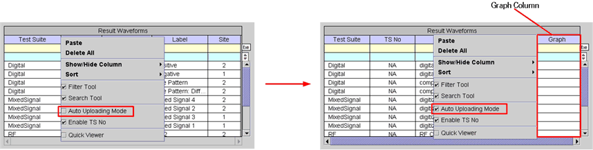

Auto Uploading Mode
This function causes the Graph column to appear in the Result Waveforms table for setting the condition that defines how a waveform is uploaded automatically into a display. Without a waveform selected, right-click anywhere in the Result Waveforms table, then check the Auto Uploading Mode box as shown below.

You can edit the Graph column by clicking in any cell in this column. In this state, right-click, and make a selection from the drop down list. The inputs in this column are effective even if you collapse the column, but will not be effective if you exit the Signal Analyzer.
The selections are as follows:
Numeric Value (1-64) - specified waveform will be uploaded automatically into the selected graph of the Waveform Graphs Tool (WGT) in the next test execution, and any previous waveforms will not be cleared. The input numeric value becomes the graph ID.
New Window - specified waveform will be uploaded automatically into a new Data Display Panel of the Waveform Graphs Tool (WGT) in the next test execution.
Overwrite - specified waveform will be uploaded automatically into the selected graph of the Waveform Graphs Tool (WGT) in the next test execution, and any previous waveforms will be cleared.
Overlay - specified waveform will be uploaded automatically into the selected graph of the Waveform Graphs Tool (WGT) in the next test execution, and any previous waveforms will not be cleared.